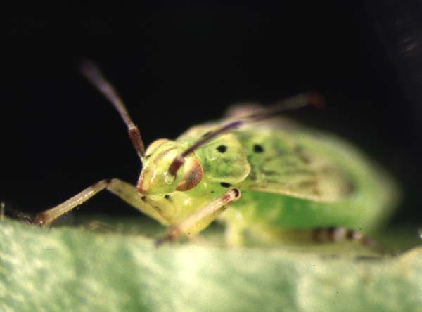
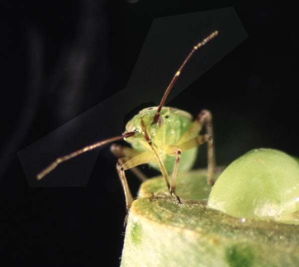

{kind=link}
Insect Biodiversity Project: South-central US and Mexico (i.e. Texas, etc.)
Lepidoptera Resources
Back to top- USC Collection: Richard B. Dominick Moth and Butterfly Collection (ca. 1970).
- USC Collection: Lepidoptera Watercolors by John Abbot (1751-1840).
- Educational Kits for Raising Lepidoptera, etc. - Manduca, Monarch, Painted Lady
- The International Lepidoptera Survey
-
Electronic Resources on Lepidoptera
- Moths of the North America.
- Butterflies of the North America.
- Northern Prairie Wildlife Research Center
-
The Pherolist; list of sex pheromones of lepidoptera and
related attractants. (European site)
-
Yucca Moth Phylogeny
(Olle Pellmyr)
-
Hiromi Matsui's Catocala Site (Underwings)
-
Historical vs Recent Moth Illustrations
-
Noctuid Wing Venation Evolution Project
-
Catocala behavior (by T.D. Sargent)
-
Joe Kunkel's Home Page
- Manduca sexta Research, NSF Research Link 2000
- Manduca Scientists (Home Pages)
-
The Butterfly WebSite
- Children's Literature; Butterflies, Birds and Bugs
-
The Art of Collecting Moths
-
Monarch Watch
-
Butterflies and Moths (The Lepidoptera)
http://gypsymoth.ento.vt.edu/vagm/index.html -
The Gypsy Moth Server at Virginia Tech
-
Gordon's Entomological Home Page - Sorry, link broken.
-
Entomology Server, Colorado State University
-
University of Florida Entomology and Nematology Department
-
Department of Entomology, Iowa State University
-
On-line Insect Database, University of Deleware
- Tree of Life
- Publications and News Items - University of Florida Entomology and Nematology Department
Insect Journals
Back to top-
Arthropod Structure & Development
-
Insect Biochemistry and Molecular Biology
-
Journal of Insect Molecular Biology
-
Journal of Insect Physiology
-
Annual Review of Entomology
Forensic Entomology
Back to top- Forensic Entomology Home Page
- Misc. Forensics, Mark Benecke
- American Board of Forensic Entomology
- FORENSIC ENTOMOLOGY: THE USE OF INSECTS IN DEATH INVESTIGATIONS
- Forensic Links, Florida Atlantic Univ.
- Forensic Science Resources
Lygus sp.
Back to top  {kind=link}
{kind=link}
(photos by (R. G. Vogt)
- Lygus sp. information
Lygus lineolaris, 5th instar nymphs.
(click for larger images)
- Lygus lineolaris: olfactory biochemistry.
Dickens, J.C., Callahan, F.E., Wergin, W.P. and Erbe, E.F. (1995). Olfaction in a hemimetabolous insect: Antennal-specific protein in adult Lygus lineolaris (Heteroptera: Miridae). J. Insect Physiol. 41, 857-867. (JIP)Dickens, J.C. and Callahan, F.E. (1996). Antennal-specific protein in tarnished plant bug, Lygus lineolaris: production and reactivity of antisera. Ent. Exp. Et Appl. 80, 19-22.
Chinta, S., Dickens, J.C. and Baker, G.T. (1997) Morphology and distribution of antennal sensilla of the tarnished plant bug, Lygus lineolaris (Palisot de Beauvois) (Hemiptera: Miridae). Int. J. Insect Morphol 26, 21-26. NOW:Arthropod Structure & Development
Dickens JC, Callahan FE, Wergin WP, Murphy CA, Vogt RG (1998) Odorant-binding proteins of true bugs. Generic specificity, sexual dimorphism, and association with subsets of chemosensory sensilla. Ann N Y Acad Sci 855, 306-310. Read Abstract
Dickens JC, Callahan FE, Wergin WP, Murphy CA, Vogt RG. (1998) Immunolocalization and Intergeneric Distribution of a Putative Odorant-Binding Protein in True Bugs (Heteroptera: Miridae). Journal of Experimental Biology, 201, 33-41. Read Abstract
Vogt RG, Callahan FE, Rogers ME, and Dickens JC. (1999) Odorant Binding Protein Diversity and Distribution among the Insect Orders, as indicated by LAP, an OBP-related protein of the True Bug Lygus lineolaris (Hemiptera, Heteroptera). Chemical Senses 24, 481-495. Read Abstract
A Roach Resource
Back to top-
Roach Cam, Tim Mousseau at University of South Carolina
-
Rachel's Cockroach Web Page
- The Cockroach Control Manual

Animated Roach is from The Department of Entomology at Virginia Tech.
Collecting / Supplies
Back to top-
BioQuip
Fine Science Tools
John W. Hock Company, Insect Sampling Devices
Educational Kits for Raising Insects
Mosquito Resources
Back to top- West Nile Virus Links
- USGS West Nile Virus Maps
- CDC West Nile Web Site
- West Nile Virus Site of National Pesticide Information Center
- Cornell University West Nile Site
- Mosquito carriers of WNV
- Bird Species Affected by WNV
- National Biological Infrastructure – WNV Site
- USDA Aphis WNV Site
- American Bird Conservancy
- Mosquito List Serve
-
Searchable Archives; Mosquito List Serve
-
Key to the Mosquito Genera of North America North of Mexico
-
VectorBytes - Mosquito and Other Vector Information
-
Olfactory Orientation; Mosquitoes, Takken
-
Mosquito Atlas: Images of Aedes aegypti adult mosquitoes.
-
Florida Mosquito Control Association
-
Links to mosquito-related topics
-
Mosquito Larvicide Section, Fla. Ag. Mech. University
-
Mosquito Adulticide Section, Fla. Ag. Mech. University
-
Links to mosquito-related topics
-
Mosquito Genomics WWW Server
-
An Anopheles Database (AnoDB)
-
Anopheles gambiae Mutant World
-
Filarial Genome Network
-
Parasite-Genome Information
-
List of cell line names. search: mosquito
-
Genome Centers: Weizmann Collection
-
Mosquitoes and Other Biting Flies
-
Aedes albopictus - Has it replaced Aedes aegypti?, Mike Womack
-
Albopictus vs. Aegypti Web Site; Distribution Maps
-
DISEASE VECTOR IDENTIFICATION KEYS (North America)
-
Biting flies attacking man and livestock in Canada
-
Entomology Image Gallery
-
Kentucky Mosquitoes and their Control
-
Mosquito larvae as fish food
-
THE AMERICAN MOSQUITO CONTROL ASSOCIATION
-
AgraQuest's Mosquito Larvae Killer
-
Mosquito-borne Dog Heartworm Disease
-
Malaria Report
-
Malaria in Texas?
-
Imported Dengue - United States, 1992
-
Malaria
-
MALARIA: A DEADLY DISEASE
-
Cellular Mechanisms of Immunity to Malaria Parasites
-
ARBOVIRUSES
-
Control of Malaria Vectors in Africa and Asia
-
Preventing Malaria in Travelers
-
Vaccines for Travellers
-
John K. VanDyk, Iowa State University
-
Department of Tropical Medicine, Tulane University
-
Dept. Medical Entomology, Sydney Aus
-
CDC: Division of Vector-Borne Infectious Diseases
-
PAN AMERICAN HEALTH ORGANIZATION (PAHO)
-
Networking for Tropical Desease
-
Information on DEET
-
Common Names Insect Attractants
-
Illinois Natural History Survey; Economic Entomology
random discussion...
I'm interested in lures for mosquito traps. I'm compiling a collection of effective mediums. I've heard that octenol is one such substance, as well as co2. I'd appreciate any information or if you could point me toward any research I'd appreciate it.
In reply to the query about mosquito lures, Mike Service has reviewed this and many other related subjects in his book Mosquito Ecology: Field Sampling Methods. Pub: Elsevier/Chapman Hall ISBN 1-85166-789-9.
Basically, different mosquito species react to octenol, lactic acid, CO2 etc in different ways. Some chemicals have an attractant effect that is only apparent in the presence of a second chemical.
Such synergism is very common in the interactions of kairomones and pheromones. Feeding mosquitoes may even produce an invitation pheromone attracting other mosquitoes to the host.
I hope that helps.
Mike Service can be reached by e-mail to: mservice@liv.ac.uk
Nevil said: What are the actual cues for a female mosquito to sense it's vertebrate source of blood ? Why doesn't the male "sense" them ? Would be grateful to anyone who can provide some definite answers and/or guide me to some of the more recent reading materials on the topic. Thanking you,
Since this is the second message, that came across the net, I am passing on a post from an entomology friend. He also maintains an entomology www site at Iowa, which is very nice.
Here is the post.>collection of effective mediums. I've heard that octenol is one such >substance, as well as co2. I'd appreciate any information or if you >could point me toward any research I'd appreciate it.
Mark,
There is a wealth of literature on this topic. Pick up any issue of the Journal of the American Mosquito Control Association or the Journal of Medical Entomology and you'll probably run across an article or two.
CO2 is by far the most commonly used. Octenol works for some genera but not others (in combination with CO2) and lactic acid works in combination with CO2. Other approaches are live baits (malaise traps) or aspirator/suction traps (see many articles by Bidlingmayer).
The method you choose will depend on your objective. Engorged mosquitoes may come to oviposition attractants; host-seeking mosquitoes will come to host odors.
John
-- John VanDyk, Medical Entomology
Internet: jvandyk@iastate.edu --